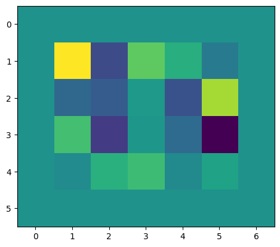
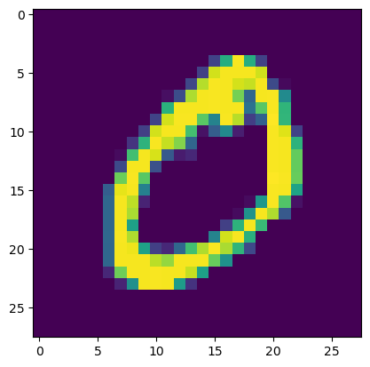
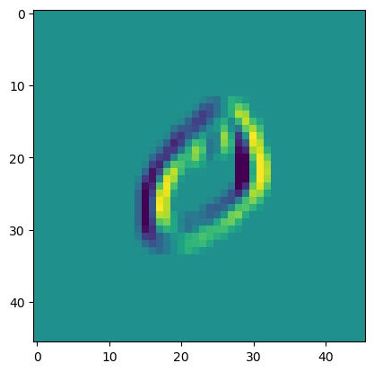

def np_pad2d(a: np.ndarray, pad: tuple[int, int]) -> np.ndarray:
h, w = pad
pad_widths = [(0, 0)] * (a.ndim - 2) + [(h, h), (w, w)]
return np.pad(a, pad_widths, mode="constant")
def np_unpad2d(a: np.ndarray, pad: tuple[int, int]) -> np.ndarray:
h, w = pad
return a[..., h:-h, w:-w]Functional operations: Convolution and Pooling
# Updated test for np_pad
A = np.array([[1, 2], [3, 4]])
pad_A = np_pad2d(A, (1, 1))
assert np.array_equal(pad_A, [[0, 0, 0, 0], [0, 1, 2, 0], [0, 3, 4, 0], [0, 0, 0, 0]])
A_recovered = np_unpad2d(pad_A, (1, 1))
assert np.array_equal(A, A_recovered)Pad
Pad (a, padding:Union[int,Tuple[int,int]], name=None)
Pad a tensor
from matplotlib import pyplot as plt
import tidygrad as tgx = tg.Tensor(np.random.randn(1, 1, 4, 5), name="x")
bias = Pad(x, 1).out
plt.imshow(bias.data[0, 0, :, :]);
def np_conv2d(input: np.ndarray, kernel: np.ndarray, bias: np.ndarray):
batch, input_channels, input_height, input_width = input.shape
output_channels, _input_channels, kernel_height, kernel_width = kernel.shape
assert kernel_height % 2 == 1, "Only odd kernel sizes are supported for"
assert kernel_width % 2 == 1, "Only odd kernel sizes are supported for"
assert (input_channels == _input_channels), f"Input channels mismatch: {input_channels} != {_input_channels}"
assert bias.shape == (output_channels, ), f"Invalid bias shape: {bias.shape}"
# bias = bias / (kernel_height * kernel_width)
output_height = input_height - kernel_height + 1
output_width = input_width - kernel_width + 1
y = np.zeros((batch, output_channels, output_height, output_width), dtype=input.dtype)
for r in range(output_height):
for c in range(output_width):
region = input[..., r:r + kernel_height, c:c + kernel_width]
y[..., r, c] = np.sum(region * kernel, axis=(-1, -2, -3)) + bias
return y
def np_kernel_grad(input: np.ndarray, kernel: np.ndarray, bias: np.ndarray, grad: np.ndarray):
batch, input_channels, input_height, input_width = input.shape
output_channels, _input_channels, kernel_height, kernel_width = kernel.shape
assert kernel_height % 2 == 1, "Only odd kernel sizes are supported for"
assert kernel_width % 2 == 1, "Only odd kernel sizes are supported for"
assert (input_channels == _input_channels), f"Input channels mismatch: {input_channels} != {_input_channels}"
assert bias.shape == (output_channels, ), f"Invalid bias shape: {bias.shape}"
output_height = input_height - kernel_height + 1
output_width = input_width - kernel_width + 1
# padded_input # [ batch, input_channels, input_height, input_width
# kernel # [ output_channels, input_channels, kernel_height, kernel_width ]
# grad # [ batch, output_channels, output_height, output_width ]
# assert kernel_width == kernel_height, "Only square kernels are supported for now"
assert grad.shape[-2:] == (
output_height,
output_width,
), f"Invalid grad shape: {grad.shape}"
grad_w = np.zeros_like(kernel)
for r in range(output_height):
for c in range(output_width):
p = input[:, :, r:r + kernel_height, c:c + kernel_width]
for ch in range(0, output_channels):
q = grad[:, ch, r, c]
grad_w[ch, :, :, :] += (p * q).sum(axis=0)
return grad_wRelationship Between Padding, Kernel Size, and Deconvolution
For a convolution operation, given:
- Input size \(N\)
- Kernel size \(k\) (where \(k \leq N\))
- Padding \(p\) (applied symmetrically on all sides)
The padded input will have a size of \(N + 2p\).
After applying the convolution with the kernel, the output \(y\) will have a size:
\[ N_y = N + 2p - k + 1 \]
Back to Input Domain (Deconvolution)
Before convolving back to the input domain, we apply a new padding \(p'\) (unknown at this point) to \(N_y\), resulting in a length of \(N_y + 2p'\).
After the deconvolution, we get:
\[ (N_y + 2p') - k + 1 = N + 2p - k + 1 + 2p' - k + 1 \]
Simplifying, we find:
\[ N + 2(p + p') - 2k + 2 = N \\ 2(p + p') - 2k + 2 = 0 \\ p + p' = k - 1 \\ p' = k - p - 1 \\ \]
This equation gives us the value of \(p'\) required to get back to the input domain size \(N\) after deconvolution.
Back-propagation through a convolutional layer
For a convolution operation, given:
(even kernels only, stride size one)
- Input size \(N\)
- Kernel size \(k\) (where \(k \leq N\))
Forward pass:
- Output size will be \(N - (k+1)\)
For example: Input 7x7, kernel 3 -> output 5x5 Input 11x11, kernel 5 -> output 7x7
Back pass, calculating the gradient for the input.
The shape of the chain gradient will be the same the output.
We are going to apply a convolution to it with the rotated and transposed kernel, so we need to pad the gradient for the convolution to produce an output of input size.
for example (Forward ) Input 7x7, kernel 3 -> output 5x5 (Backward) Gradient 5x5, padded by P, kernel 3 -> output should be 7x7
Thus 2P (padding on both sides) should be input_size - output_size + (kernel_size - 1)
And P should be (input_size - output_size + (kernel_size - 1)) / 2
Note that (kernel_size - 1) is always even, and input_size and output_size are either both even or both odd, so this divides evenly.
class Conv2D(BaseOp):
def __init__(self, input, kernel, bias, stride=1, padding=0, name=None):
super().__init__(input, kernel, bias, name=name)
assert stride == 1, "Only stride=1 is supported for now"
if 1 in kernel.data.shape[-2:]:
assert padding == 0, "Padding is not supported for 1x1 kernels"
self.stride = stride
self.padding = (padding, padding) if isinstance(padding, int) else padding
self.parents = [*self.args] if self.requires_grad else []
self.input_data_padded = np_pad2d(self.args[0].data, self.padding)
data = np_conv2d(self.input_data_padded, kernel.data, bias.data)
self.set_out(data)
# self.out = Tensor(data, name=self.name, op=self)
def backward(self):
rot180 = lambda x: np.rot90(x, 2, axes=(-1, -2)).transpose(1, 0, 2, 3)
input, kernel, bias = self.args
grad = self.out.grad
pad_h = (input.data.shape[-2] - self.out.data.shape[-2] + (kernel.data.shape[-2] - 1))
pad_w = (input.data.shape[-1] - self.out.data.shape[-1] + (kernel.data.shape[-1] - 1))
assert pad_h % 2 == 0, "Invalid padding"
assert pad_w % 2 == 0, "Invalid padding"
pad_h //= 2
pad_w //= 2
padded_grad = np_pad2d(grad, (pad_h, pad_w))
input.accum_grad(np_conv2d(padded_grad, rot180(kernel.data), np.zeros(input.shape[1])))
kernel.accum_grad(np_kernel_grad(self.input_data_padded, kernel.data, bias.data, grad))
bias.accum_grad(grad.sum(axis=(0, -1, -2)))from tidygrad.utils.grad_check import grad_checkh = 12
w = 12
kernel_h = 3
kernel_w = 3
in_ch = 2
out_ch = 5
pad = 1
x = tg.Tensor(np.random.randn(in_ch, h, w)[None], "x", requires_grad=True)
filter = np.random.randn(out_ch, in_ch, kernel_h, kernel_w)
kernel = tg.Tensor(filter, "w", requires_grad=True)
bias = tg.Tensor(np.random.randn(out_ch), "b", requires_grad=True)
conv = Conv2D(x, kernel, bias, padding=pad).out
loss = conv.mean()
loss.backward()
def func(inputs, params):
x, kernel, bias = params
return Conv2D(x, kernel, bias, padding=pad).out.mean()
grad_check(func, None, (x, kernel, bias))Max fractional gradient difference for b: 0.0000%
Max fractional gradient difference for w: 0.0000%
Max fractional gradient difference for x: 0.0000%from tidygrad.utils.datasets import MNISTmnist = MNIST()
x = tg.Tensor(mnist[1][0][None][None], "x")
plt.show(plt.imshow(x.data[0, 0]))
filter = np.array([[1.0, 0, -1], [1, 0, -1], [1, 0, -1]])[None, None]
kernel = tg.Tensor(filter.reshape(1, 1, 3, 3), "w")
bias = tg.Tensor(np.zeros((1, )), "b")
conv = Conv2D(x, kernel, bias, padding=10).out
# conv = Conv2D(conv, kernel, bias, padding=1).out
# conv = Conv2D(conv, kernel, bias, padding=1).out
plt.imshow(conv.data[0, 0, :, :])
<matplotlib.image.AxesImage>
class MaxPool2D(UnaryElementwiseOp):
def __init__(self, a, kernel_size, name=None):
super().__init__(a, name=name)
self.kernel_size = kernel_sizeA = np.arange(0, 36).reshape(1, 1, 6, 6)
A.reshape(1, 1, 3, 3, 2, 2)
print(A)
block_size = 2
shape = A.shape
new_shape = shape[:-2] + (
shape[-2] // block_size,
block_size,
shape[-1] // block_size,
block_size,
)
A.reshape(new_shape).swapaxes(-2, -3)
def factorial(a):
return np.prod(np.arange)[[[[ 0 1 2 3 4 5]
[ 6 7 8 9 10 11]
[12 13 14 15 16 17]
[18 19 20 21 22 23]
[24 25 26 27 28 29]
[30 31 32 33 34 35]]]]A = np.array([[1, 2, 3, 4], [5, 6, 7, 8], [9, 10, 11, 12], [13, 14, 15, 16]])
A = A.reshape(2, 2, 2, 2)
print(A)
A.swapaxes(-2, -3)[[[[ 1 2]
[ 3 4]]
[[ 5 6]
[ 7 8]]]
[[[ 9 10]
[11 12]]
[[13 14]
[15 16]]]]array([[[[ 1, 2],
[ 5, 6]],
[[ 3, 4],
[ 7, 8]]],
[[[ 9, 10],
[13, 14]],
[[11, 12],
[15, 16]]]])